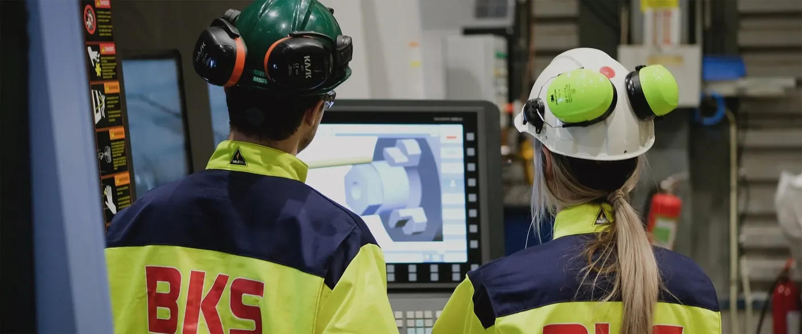

Industri · Norge
Teknisk totalleverandør for industri og maritim sektor.
Vi leverer som avtalt – i alt fra mindre oppdrag til komplekse totalleveranser. Maskinering, vasskjæring og engineering, samlet hos ett firma.
Tegningen tegnes når den kommer i syne
Produkt og tjenester
Slik kan vi bidra
Fra en enkelt komponent til komplett leveranse, med dokumentasjon og kontroll underveis.
Maskinering
Bearbeiding av komponenter til industri og maritim sektor.
02Vasskjæring
Kapping og skjæring med toleranse for videre bearbeiding.
03Engineering
Konstruksjon og teknisk dokumentasjon før produksjon.
04Smelteverk
Leveranser til smelteverk, med krav til materialer og sporbarhet.
05Akvakultur
Komponenter og vedlikehold for havbruk.
06Fornybar energi
Leveranser til fornybar energi og prosessindustri.

Tverrfaglig industripartner
Ett firma, flere fag
BKS Industri leverer til skip, offshore og landbasert industri. Fagene henger sammen, og det gir færre grensesnitt for kunden.
- Maskinering og vasskjæring.
- Engineering og dokumentasjon.
- Leveranser til smelteverk og akvakultur.
- Prosessindustri, maritim og offshore.
Bransjer
Der vi leverer
Åtte bransjer, samme krav til presisjon og dokumentasjon.
| Bransje | Typisk behov |
|---|---|
| Smelteverk | Komponenter som tåler varme og slitasje. |
| Akvakultur | Deler og vedlikehold i korrosivt miljø. |
| Fornybar energi | Presisjonsdeler til produksjonsutstyr. |
| Prosessindustri | Erstatningsdeler og planlagt vedlikehold. |
| Maritim | Maskinering for skip og utstyr om bord. |
| Offshore | Dokumenterte leveranser med sporbarhet. |
Har dere en leveranse på gang?
Beskriv komponenten eller oppdraget, så sier vi hva vi kan levere.